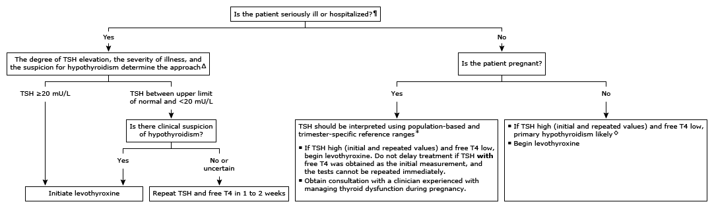

T4: thyroxine; TSH: thyroid-stimulating hormone.
* The normal range for TSH in nonpregnant adults is typically 0.5 to 4.5 mU/L, and for serum free T4, approximately 0.8 to 1.8 ng/dL (10.3 to 23.3 pmol/L). Interpretation of a specific abnormal test result should be based upon the reference range reported with that result. During pregnancy, TSH should be interpreted using population-based and trimester-specific reference ranges for TSH and assay method and trimester-specific reference ranges for serum free T4. When population-based, trimester-specific reference ranges are not available for TSH, 4.0 mU/L should be considered the upper limit of normal in pregnant women.
¶ In general, TSH should not be assessed in seriously ill patients unless there is a strong suspicion of thyroid dysfunction, since there are many other factors in acutely or chronically ill euthyroid patients that influence TSH secretion.
Δ Thyroid function tests may improve during recovery from nonthyroidal illness.
◊ In patients with known hypothalamic or pituitary disease or symptoms and signs of other hormonal deficiencies, and a slightly high TSH (eg, up to 10 mU/L), central hypothyroidism should be suspected. In this setting, the slightly high TSH is due to secretion of biologically inactive TSH.